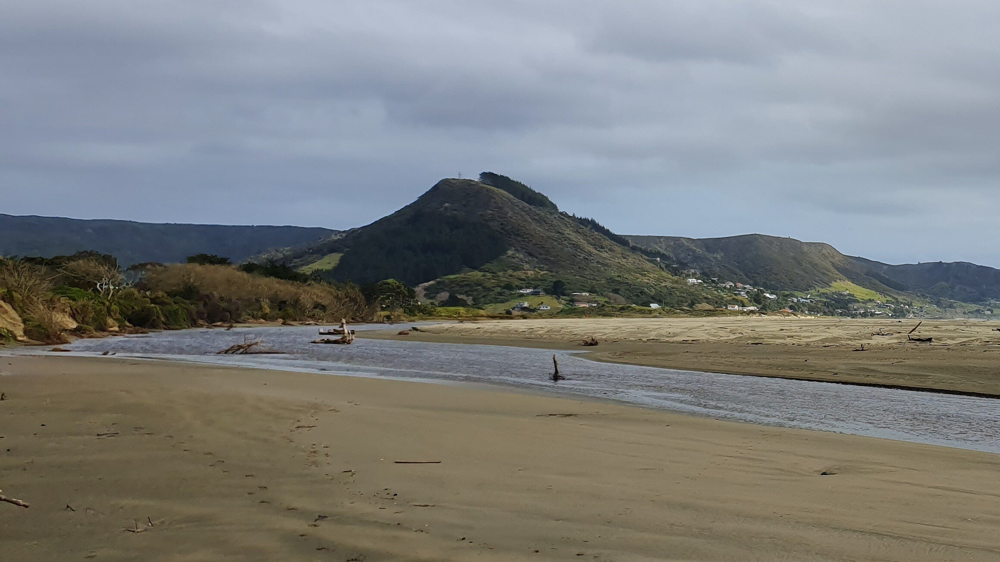

The Story of Te Houtaewa
E kore e mau i a koe, he wae kai pakiaka. A foot accustomed to running over roots makes the speediest runner.
10 November 2010
Te Houtaewa was a legendary figure of the Te Rarawa people of the Far North of New Zealand. He was renowned for his extraordinary speed and agility, which he used to outpace his enemies and perform daring feats. His story is a testament to the strength and resilience of the Te Rarawa people.
Te Houtaewa was the fastest runner of his day and played many pranks on
his peoples enemies. One morning his mother wanted kumara for the hangi
(earth oven) and asked Te Houtaewa to go to the gardens at Te Kao, a
short distance away. He agreed to fetch the kumara and told his mother
to prepare the hangi.

Instead of going to the nearby gardens, Te Houtaewa set off for Ahipara as he wanted to annoy some Te Rarawa people who lived there. Carrying two large baskets for the kumara, he ran like the wind, completing the journey over the hard sands of Te Oneroa a Tohe (Ninety Mile Beach) in the few hours it takes a good hangi to heat up properly. On reaching Ahipara, he went straight to the people's kumara pataka (storehouse for the sweet potatoes) situated at the foot of the hill Whangatauatia. 
While Te Houtaewa was filling his baskets with kumara he was spotted stealing the kai (food). He was immediately recognised.